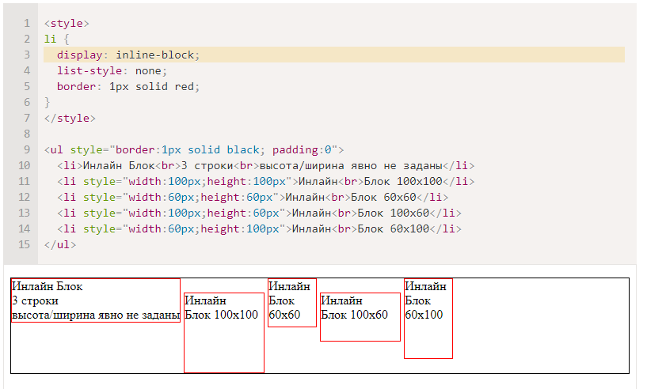
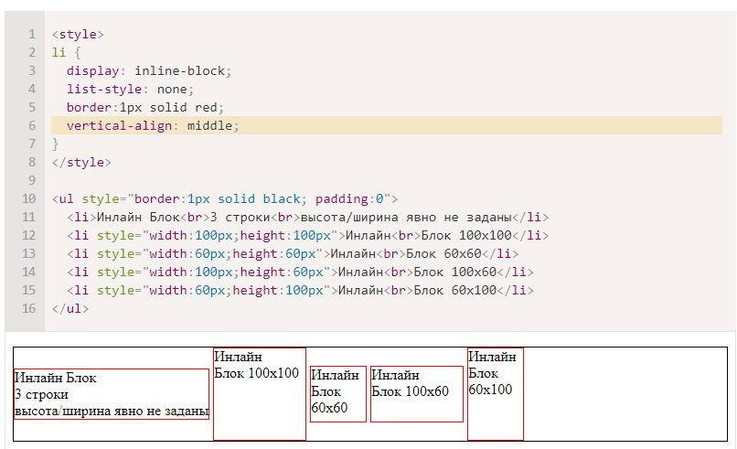

Значение inline-block
Это значение – означает элемент, который продолжает находиться в строке (inline), но при этом может иметь важные свойства блока.
Как и инлайн-элемент:
- Располагается в строке.
- Размер устанавливается по содержимому.
- Элемент всегда прямоугольный.
- Работают свойства width/height.
Во всём остальном – это блок, то есть:
Это значение display используют, чтобы отобразить в одну строку блочные элементы, в том числе разных размеров.
Например:
Свойство vertical-align позволяет выровнять такие элементы внутри внешнего блока:
Как и в случае с инлайн-элементами, пробелы между блоками появляются из-за пробелов в HTML. Если элементы списка идут вплотную, например, генерируются в JavaScript – их не будет.